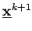
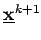

Es wird das allgemeine Optimierungsproblem
| (18.71) |
mit einer stetig differenzierbaren Funktion f betrachtet. Mit den in diesem Abschnitt beschriebenen Verfahren wird eine im allgemeinen unendliche Punktfolge konstruiert, deren Häufungspunkte stationäre Punkte sind. Die Punktfolge wird ausgehend von nach der Vorschrift
 |
(18.72) |
berechnet, d.h., in  wird eine Richtung bestimmt und mittels des Schrittweitenparameters festgelegt, wie weit  in Richtung
wird eine Richtung bestimmt und mittels des Schrittweitenparameters festgelegt, wie weit  in Richtung  von
von  entfernt liegt. Ein so konstruiertes Verfahren heißt Abstiegsverfahren, wenn gilt
entfernt liegt. Ein so konstruiertes Verfahren heißt Abstiegsverfahren, wenn gilt
| (18.73) |
Die Bedingung , wobei  der Nablaoperator ist, charakterisiert einen stationären Punkt und kann als Abbruchtest für die Iterationsverfahren herangezogen werden.
der Nablaoperator ist, charakterisiert einen stationären Punkt und kann als Abbruchtest für die Iterationsverfahren herangezogen werden.
Die in den folgenden Abschnitten angeführten Verfahren unterscheiden sich hinsichtlich der Festlegung der Richtungen  und der Schrittweiten
und der Schrittweiten  . In 18.9 werden Optimierungsverfahren untersucht, die zur Angabe der Richtungen und zur Schrittweitensteuerung Evolutionsstrategien einsetzen.
. In 18.9 werden Optimierungsverfahren untersucht, die zur Angabe der Richtungen und zur Schrittweitensteuerung Evolutionsstrategien einsetzen.